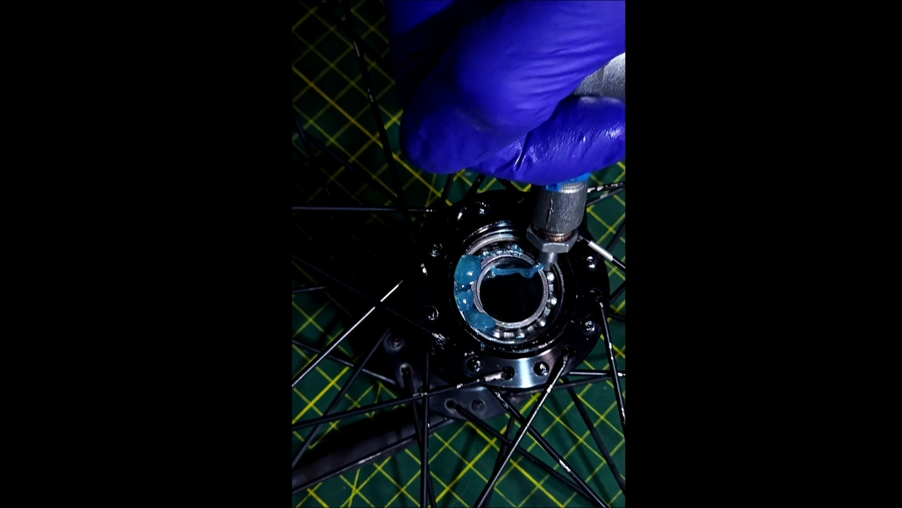
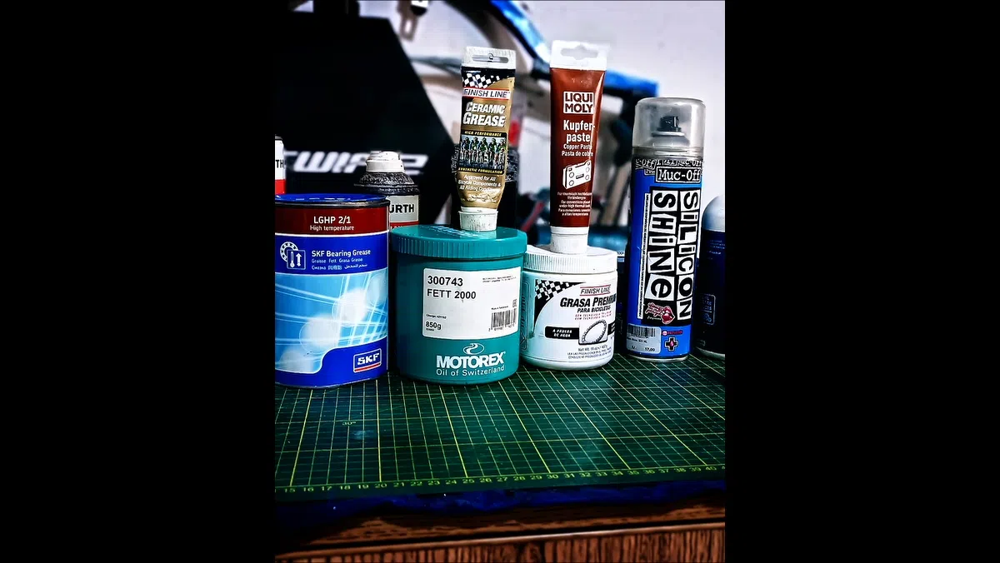
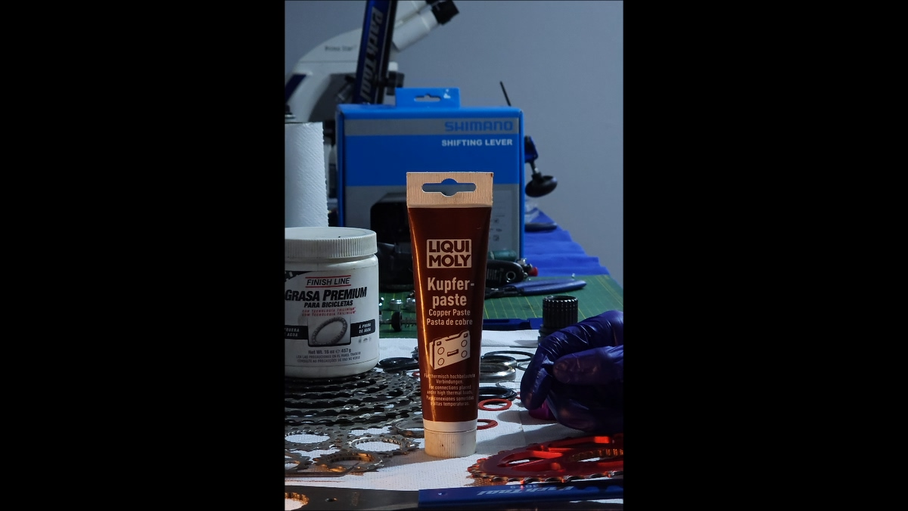
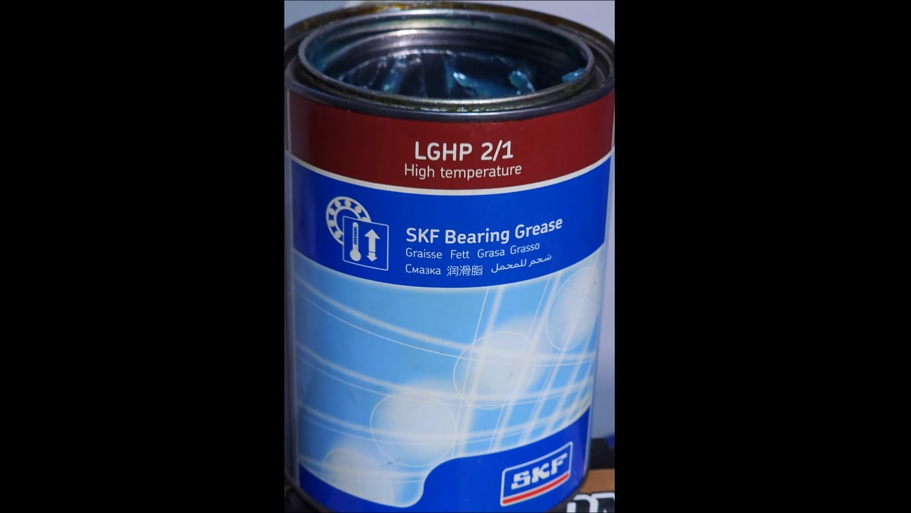

Imágenes reales de taller — aplicación, productos y casos típicos. (No se redimensionan; solo se etiquetan para SEO).




Entra a la mayoría de talleres de bicicletas en Perú y vas a encontrar una sola lata. Una. Grasa multiusos de ferretería, grasa de carro, a veces incluso vaselina. Van con eso al pedal, a los rodamientos, a la tija, al potenciador, a la rosca del cassette. Todo igual.
Técnicamente es un error. No de opinión — de ingeniería de materiales.
La tribología, la ciencia que estudia la fricción, el desgaste y la lubricación entre superficies en movimiento, establece con precisión que cada interfaz mecánica tiene condiciones distintas de carga, temperatura, velocidad de deslizamiento y compatibilidad química. Aplicar el lubricante equivocado no es neutral: acelera el desgaste, puede contaminar el fluido de freno si hay migración, y genera torques de apriete incorrectos en elementos roscados.
En esta foto están los seis productos que uso en BikeLab Studio. A continuación explico qué hace cada uno, por qué lo seleccioné sobre sus alternativas, y qué datos de taller respaldan esas decisiones.
RESPUESTA DIRECTA
No existe una sola grasa para toda la bicicleta: cada interfaz tiene distinta carga, temperatura y química, y usar una grasa multiusos para todo acelera el desgaste. La regla tribológica es una grasa por punto de aplicación: rodamientos de precisión → grasa de poliurea de alta temperatura (SKF LGHP 2/1, que resiste la hidrólisis por humedad — clave en clima costero); cargas altas y uso general → grasa de litio NLGI 2 (Motorex Fett 2000); rodamientos cerámicos → base PAO con partículas cerámicas (Finish Line Ceramic); tornillería y zonas de alta temperatura o corrosión → pasta de cobre anti-seize (Liqui-Moly Kupferpaste). Nunca apliques grasa cerca de las superficies de freno. Para la cadena y la transmisión, el lubricante de cadena sigue una lógica distinta de la grasa.
Antes de hablar de productos necesito que entiendas la lógica detrás. Hay tres regímenes de lubricación que importan en una bicicleta:
Lubricación hidrodinámica: Una película continua de lubricante separa completamente las superficies. Ocurre en rodamientos que giran a velocidad constante con carga moderada. Se necesita una grasa con viscosidad base adecuada y espesante que retenga la película.
Lubricación de límite (boundary lubrication): Las superficies se tocan parcialmente — la película no es continua. Ocurre bajo alta carga y baja velocidad, como en el pedalier durante un sprint o en una rosca apretándose. Aquí se necesitan aditivos EP (Extreme Pressure) o partículas sólidas que actúen como cojín físico.
Lubricación mixta: Combinación de ambas. La mayoría de rodamientos de bicicleta operan aquí bajo condiciones variables de carga y velocidad.
| Interfaz | Régimen tribológico | Carga pico estimada | Requisito lubricante |
|---|---|---|---|
| Rodamiento de cubo | Mixto / Hidrodinámico | 500–900 N | Grasa EP, espesante Li o poliurea |
| Pedalier (BB) bajo sprint | Límite | 1,200–1,800 N | Grasa EP alta carga, aditivos AW |
| Rosca potenciador / tija | Contacto estático + micro-vibración | Torque 5–8 Nm | Anti-seize o pasta cerámica |
| Rosca cassette / pedal | Contacto estático galvánico Al–Fe | Alta carga + humedad cíclica | Pasta cobre anti-corrosión galvánica |
| Tija / horquilla expuestas a lluvia | Mixto de baja velocidad + lavado | Variable | Grasa alta resistencia al agua |
Cada fila de esa tabla es un producto distinto. No hay una grasa que resuelva bien todas esas condiciones simultáneamente. Solo hay grasa que las resuelve todas de forma mediocre.
Viscosidad base: 100 cSt @ 40°C / Rango operativo: –20°C a +150°C continuo, picos a +220°C / NLGI Grado 2 / Sin espesante de litio.
USO_ÓPTIMO: RODAMIENTOS_SELLADOS_PREMIUMSKF fabrica los rodamientos que van en la mayoría de cubos premium que llegan a este taller — DT Swiss, Chris King, Hope, Shimano XT/XTR. No es casualidad que use su propia grasa para serviciarlos. SKF diseñó el LGHP 2 específicamente para rodamientos de bolas y de rodillos bajo cargas radiales y axiales combinadas.
El espesante de poliurea, en lugar del litio convencional, tiene una propiedad que importa en Trujillo específicamente: resistencia superior a la hidrólisis por humedad. El litio estearato se hidroliza con agua — la poliurea no. En una ciudad costera con neblina constante, esto tiene impacto real y medible en la vida útil del rodamiento.
| Parámetro | SKF LGHP 2/1 | Grasa litio genérica | Diferencia práctica |
|---|---|---|---|
| Temperatura máx. continua | +150°C | +120°C | +30°C de margen térmico |
| Temperatura pico (corto plazo) | +220°C | +160°C | +60°C adicionales bajo carga extrema |
| Resistencia al lavado (ASTM D1264) | <1% de pérdida | 5–15% de pérdida | Factor 5–15x mejor |
| Intervalo de servicio estimado | 8,000–12,000 km | 3,000–5,000 km | 2–3x más duración por carga |
| Compatibilidad sellos NBR/FKM | Verificada por SKF spec | Variable / sin certificación | Sin riesgo de hinchazón del sello |
DATO_DE_TALLER:
Cuando llega un cubo DT Swiss 240 o un Chris King con entre 10,000 y 14,000 km encima mantenido con LGHP 2, la grasa sigue siendo visualmente consistente — sin separación de aceite, sin decoloración por oxidación. Con grasa de litio genérica, el mismo cubo a 4,000–5,000 km ya muestra degradación: oscurecimiento, pérdida de consistencia, inicio de corrosión en las pistas. Lo he visto suficientes veces como para no tener dudas. El intervalo de servicio no es una recomendación del fabricante aplicada con optimismo — es lo que verifica el estado de la grasa cuando llega al banco.
¿Dónde no la uso? En roscas. LGHP 2 no tiene aditivos anti-seize. Ponerla en una rosca aluminio-acero bajo torque alto es garantía de corrosión galvánica a mediano plazo. Ahí entra un producto diferente.
Viscosidad base: 160 cSt @ 40°C / Rango: –30°C a +130°C / Aditivos EP + AW (Anti-Wear) / 850g.
USO_ÓPTIMO: PEDALIER · DIRECCIÓN · CUBOS_RANGO_MEDIOMotorex es suiza, fundada en 1917. No son una marca de ciclismo — son una empresa de lubricantes industriales que tiene una línea para bicicletas. Esa distinción importa: su base de formulación viene de ingeniería industrial, no de marketing deportivo.
El Fett 2000 tiene una viscosidad base significativamente mayor que la mayoría de grasas para bicicletas: 160 cSt versus los 68–100 cSt típicos. A mayor viscosidad base, mayor película bajo compresión. Esto lo hace ideal para interfaces de baja velocidad y alta carga — exactamente lo que son un pedalier y una dirección integrada.
| Aplicación | Fett 2000 | Intervalo estimado | Observación de taller |
|---|---|---|---|
| Pedalier BB threaded | Óptimo | 6,000–8,000 km | Sin creaks, sin oxidación en rosca |
| Dirección integrada 1-1/8" | Óptimo | 8,000–10,000 km | Marcha suave hasta el final del intervalo |
| Eje de pedal | Óptimo | 4,000–6,000 km | Resuelve el "click" confundido con BB |
| Cubo rueda rango medio | Adecuado | 5,000–7,000 km | Correcto. Para componentes premium, SKF LGHP. |
DATO_DE_TALLER:
El creak del pedalier es la queja más frecuente en bicicletas que han pasado por mantenimiento en otro taller. En un porcentaje alto de los casos que llegan aquí, la causa no es el BB — es el eje del pedal sin grasa o con grasa seca. Aplico Fett 2000 en las roscas de pedal con el torque correcto (40 Nm lado izquierdo; recordar rosca inversa) y el ruido desaparece. Sin piezas nuevas. No es diagnóstico brillante — es mantenimiento básico aplicado correctamente.
Base: PAO (Polyalphaolefin) sintética / Partículas: TiO₂ + Al₂O₃ submicrónicas / Rango: –40°C a +200°C / Compatible con todos los componentes de bicicleta.
USO_ÓPTIMO: RODAMIENTOS_CERÁMICOS · CARBONO · CALAS_SPDLas grasas cerámicas operan bajo un principio distinto a las convencionales. Las partículas cerámicas — óxido de titanio y alúmina en este caso — actúan como rodamientos microscópicos entre las superficies metálicas. Cuando la película de aceite se rompe bajo carga extrema (régimen de boundary lubrication), las partículas sólidas evitan el contacto metal-metal directo. No es publicidad — es tribología de contacto básica.
La base PAO (polialfaolefina) aporta dos ventajas sobre las bases minerales: índice de viscosidad más estable con temperatura y resistencia superior a la oxidación sin parafinas que precipiten. Esto importa especialmente en rodamientos cerámicos, donde los aditivos químicos agresivos de grasas convencionales pueden atacar los anillos de retención.
| Propiedad | Grasa mineral NLGI 2 | Finish Line Ceramic (PAO) | Diferencia práctica |
|---|---|---|---|
| Índice de viscosidad (VI) | 95–110 | 140–165 | Menos variación térmica de film |
| Protección en boundary lubrication | Solo película fluida | Película + barrera cerámica sólida | Protección cuando la película se rompe |
| Compatibilidad con fibra de carbono | Variable — solventes agresivos posibles | Verificada — base no agresiva con epoxy | Sin degradación de resina en contacto |
| Temperatura mínima operativa | –20°C | –40°C | Relevante en ciclismo andino >4,000m |
DATO_DE_TALLER:
En rodamientos cerámicos híbridos (esferas cerámica, pistas de acero), he medido diferencias de resistencia al rodamiento de 4–7% comparado con el mismo rodamiento relubricado con grasa de litio convencional. La base PAO tiene coeficiente de fricción ligeramente menor, y las partículas cerámicas no generan el drag que los espesantes sólidos de grasa convencional a bajas cargas. No son muchos watts — pero son watts reales y medibles.
Partículas de cobre en suspensión / Coeficiente de fricción controlado: μ = 0.13 / Temperatura: hasta +1,100°C / Inhibidor de corrosión galvánica Al–Fe.
USO_CORRECTO: ROSCAS · INTERFACES_BIMETÁLICAS · TOPESEsta es quizás la más malentendida. La pasta de cobre no es una grasa para piezas que giran — es un compuesto anti-seize. Su función es evitar que dos metales diferentes en contacto bajo carga y humedad se corroan hasta el punto en que sea imposible desmontarlos.
En una bicicleta, la corrosión galvánica entre aluminio y acero es un problema real y severo. Pernos de acero en potenciadores de aluminio, roscas de pedal en manivelas de aluminio, soportes de freno en cuadros de acero — todas son interfaces bimetálicas bajo carga cíclica y humedad.
ADVERTENCIA_CRÍTICA_DE_TORQUE:
La pasta de cobre modifica el coeficiente de fricción en roscas — μ pasa de ~0.20 (seco) a ~0.13. Eso cambia la conversión torque/precarga: si aplicas la pasta y luego aprietas con el torque para rosca seca, estás precargando el perno entre un 35–50% más de lo especificado. En potenciadores de carbono, esto puede causar fractura del insert. La mayoría de fabricantes (Trek, Specialized, Canyon) especifica torques para rosca seca — "dry torque". Siempre verificar antes de aplicar.
| Interfaz | ¿Usar Kupferpaste? | Razón técnica |
|---|---|---|
| Rosca pedal (acero en manivela Al) | SÍ | Par galvánico + ciclos de carga altos |
| Rosca cassette (Al/acero) | SÍ (dosis mínima) | Previene seize, facilita desmontaje |
| Topes de freno en cuadro acero | SÍ | Previene seize ferroso en puntos de soldadura |
| Pernos de potenciador en cuadro carbono | NO (normalmente) | Modifica torque — riesgo de fractura del insert |
| Rodamientos giratorios | NUNCA | Las partículas de cobre son abrasivas en pistas de acero a velocidad. Destruye el rodamiento. |
Base mineral alta refinación / Espesante: calcio sulfonato / Certificada "a prueba de agua" / 450g.
USO_CORRECTO: TIJA · HORQUILLA_HÚMEDA · CONOS_EXPUESTOSEl espesante de calcio sulfonato tiene una propiedad que la mayoría de grasas de litio no puede igualar: adherencia al metal en presencia de agua. Cuando una interfaz lubricada con grasa de litio se moja, el agua puede desplazar la grasa de las superficies metálicas. Con calcio sulfonato, la grasa se adhiere al sustrato y el agua rueda encima sin penetrar la película lubricante.
Esta no es la grasa más sofisticada del arsenal. No tiene partículas cerámicas, no tiene base sintética. Pero para lo que hace, lo hace mejor que las alternativas: mantiene film lubricante en condiciones húmedas donde la mayoría falla.
| Propiedad | Espesante Litio típico | Calcio Sulfonato (FL Premium) |
|---|---|---|
| Resistencia al lavado (ASTM D1264) | 3–8% de pérdida | <1% de pérdida |
| Punto de goteo | 170–200°C | >300°C (no gotea) |
| Inhibición de herrumbre (ASTM D1743) | Pasa (variable) | Pasa (consistente) |
| Separación de aceite bajo temperatura | Moderada | Muy baja |
Dimetilpolisiloxano (silicona PDMS) en base solvente / Protección UV / Repelente de agua y suciedad / 500ml.
USO_CORRECTO: MARCO · PLÁSTICOS · CABLES_EXTERNOS · ACABADOEl Silicon Shine no es un lubricante en sentido tribológico. Es un protector de superficies. El dimetilpolisiloxano (PDMS) forma una película no polar que repele el agua y reduce la adhesión de polvo y barro. Lo uso para el acabado final después de un servicio completo: sobre el cuadro limpio protege el anodizado de aluminio contra la oxidación UV y protege los decals en cuadros pintados. Sobre carcasas de cable externas, reduce la fricción estática con las fundas.
CONTAMINACIÓN_CRÍTICA_DE_FRENOS:
La silicona contamina los discos de freno. Un spray de Silicon Shine cerca de los rotores deposita una película invisible que reduce dramáticamente el coeficiente de fricción pastilla-rotor. He recibido bicicletas con fade inexplicable en frenos nuevos — en varios casos la causa fue silicona. Las pastillas contaminadas no se recuperan con limpieza: hay que reemplazarlas. La silicona tampoco va en cadena, rodamientos, ni ninguna interfaz que requiera tracción. Es exclusivamente para superficies externas de acabado.
Hay productos que quisiera usar regularmente y que no están disponibles en el mercado peruano de manera confiable. Los menciono porque hacer bien este trabajo implica conocer qué existe más allá de lo que está en el estante.
PRODUCTOS_EN_LISTA_DE_ESPERA // NO DISPONIBLES CONSISTENTEMENTE EN PERÚ (feb. 2026):
Dumonde Tech Original Bicycle Grease: Formulación sintética de nicho, usada en ciclocross y XC de competición en EE.UU. Viscosidad base muy baja para rodamientos de alta RPM. Las referencias de campo de mecánicos de WorldTour son suficientemente convincentes como para que esté en mi radar. No se consigue aquí de manera consistente.
Phil Wood Waterproof Grease: Clásico de la industria. Espesante de litio con aditivos anti-corrosión documentados durante décadas en cubos de acero cromoly. En Lima se consigue esporádicamente. En Trujillo, prácticamente imposible.
Krytox GPL 206 (DuPont/Chemours): Grasa PFPE (perfluoropoliéter) inerte a todo. Desarrollada originalmente para aplicaciones aeroespaciales. Incompatible con nada, durable en condiciones que destruirían cualquier grasa convencional. Para rodamientos en condiciones de Andes extremo — barro, frío severo, humedad constante — sería ideal. Precio y disponibilidad en Perú: prácticamente nula.
CeramicSpeed UFO Drip Grease: Extremadamente cara. Probablemente injustificable para el mercado peruano actual. El enfoque en reducción de coeficiente de rodamiento (CRR) con partículas de diamante amorfo es técnicamente interesante. Lo menciono para que quede registro de que existe — no para recomendarlo.
| Punto de la bicicleta | Producto correcto | Intervalo estimado | Error más común en otros talleres |
|---|---|---|---|
| Rodamientos cubo premium | SKF LGHP 2/1 | 8,000–12,000 km | Grasa litio genérica → servicio a 3,000 km |
| Pedalier / dirección integrada | Motorex Fett 2000 | 6,000–8,000 km | Misma grasa del cubo o ninguna |
| Rodamientos cerámicos / contacto carbono | Finish Line Ceramic | 6,000–10,000 km | Grasa mineral → puede degradar resina |
| Rosca pedal / cassette / topes | Liqui-Moly Kupferpaste | Cada desmontaje | Grasa o nada → seize garantizado a 2 temporadas |
| Tija / horquilla expuesta a lluvia | Finish Line Premium | 4,000–6,000 km | Cualquier grasa → se lava con la primera lluvia |
| Marco / carcasas de cable / plásticos | Muc-Off Silicon Shine | Post cada lavado | Nada, o aplicado cerca de discos → contaminación |
Una sola grasa no puede resolver todos los regímenes tribológicos de una bicicleta. No es una opinión — es física del contacto. Los parámetros de viscosidad base, tipo de espesante, aditivos EP, compatibilidad química y temperatura operativa no los puede unificar ningún producto genérico. Lo único que logra un producto "para todo" es ser mediocre en todo.
Lo que verifica esta selección no es teoría: es el estado de los componentes cuando llegan al taller después de dos o tres temporadas. Los cubos premium mantenidos con LGHP 2 llegan con grasa visualmente intacta a 12,000 km. Los pedaliers tratados con Fett 2000 en sus interfaces roscadas no crean el creak que los clientes atribuyen al BB. Las roscas de pedal tratadas con Kupferpaste se desmontan con llave normal después de tres años. Eso es lo que valida la selección — no el precio de los productos.
El costo de los seis productos en esa foto supera ampliamente el de una sola lata genérica. La diferencia está en que cada producto hace bien una cosa exacta — y eso se traduce en componentes que duran lo que técnicamente deben durar.
La grasa correcta en el punto correcto no es perfeccionismo. Es la diferencia entre mantenimiento y daño controlado lento.
[ CLUSTER_DATA_LINKS ] // TRIBOLOGÍA Y MANTENIMIENTO
La teoría desarrollada en este artículo técnico se aplica operativamente en las siguientes guías de taller. Continúa la lectura para ver la implementación paso a paso:
No es recomendable. Cada interfaz (rodamientos, tija, tornillería, pedales) tiene distinta carga, temperatura y compatibilidad química. Una grasa multiusos genérica acelera el desgaste, puede contaminar el sistema de freno por migración y produce torques de apriete incorrectos en elementos roscados.
Para rodamientos de precisión, una grasa de poliurea de alta temperatura como la SKF LGHP 2/1 (NLGI 2, viscosidad base 100 cSt, rango −20°C a +150°C). Su espesante de poliurea resiste la hidrólisis por humedad mucho mejor que el litio estearato, lo que importa en climas costeros con neblina como Trujillo.
No como grasa de rodamientos. La pasta de cobre tipo Liqui-Moly Kupferpaste es un anti-seize para tornillería y uniones expuestas a alta temperatura o corrosión; evita el gripado y permite un apriete consistente, pero no tiene las propiedades de película de carga de una grasa de rodamiento.
Porque cualquier migración de grasa o aceite a las pastillas o al rotor contamina la superficie de frenado y reduce drásticamente la mordida, además de ser muy difícil de revertir. La lubricación debe mantenerse aislada de todo el sistema de freno.